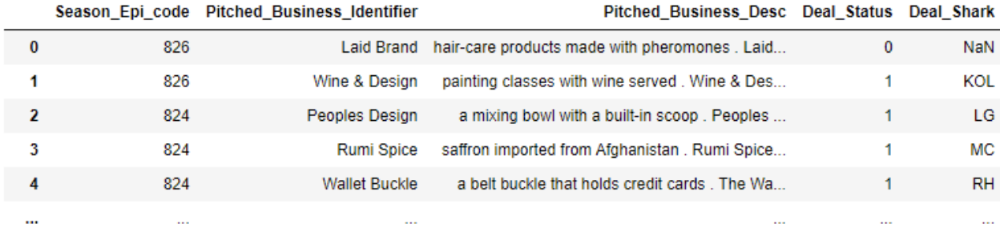
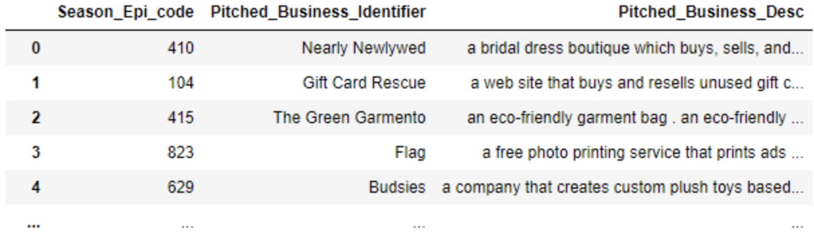
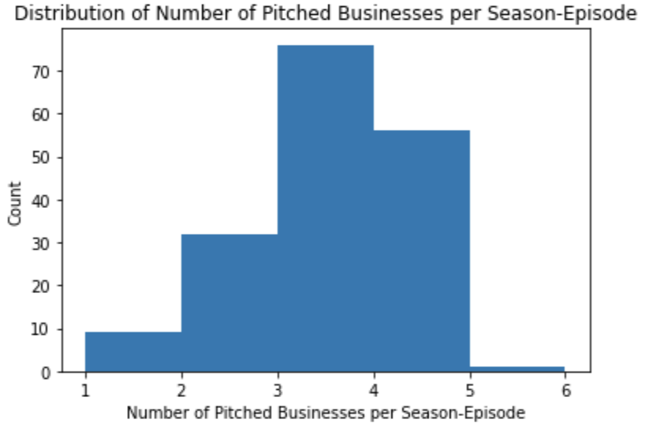
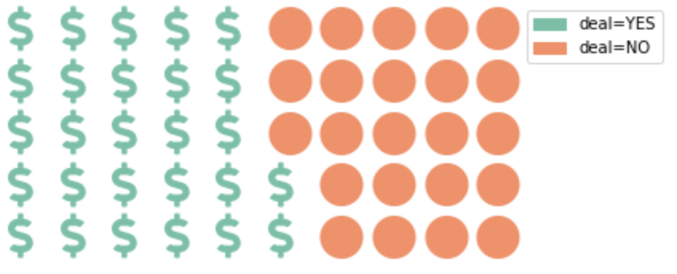
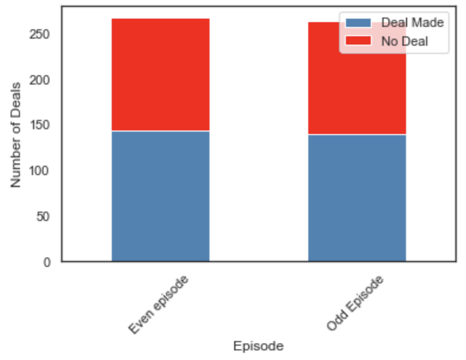
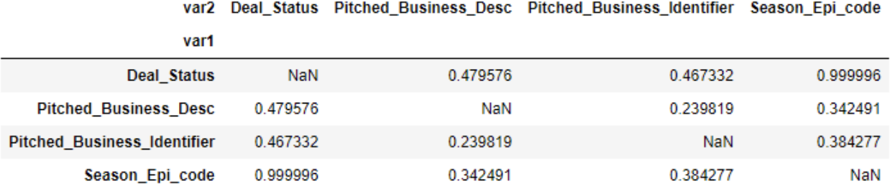
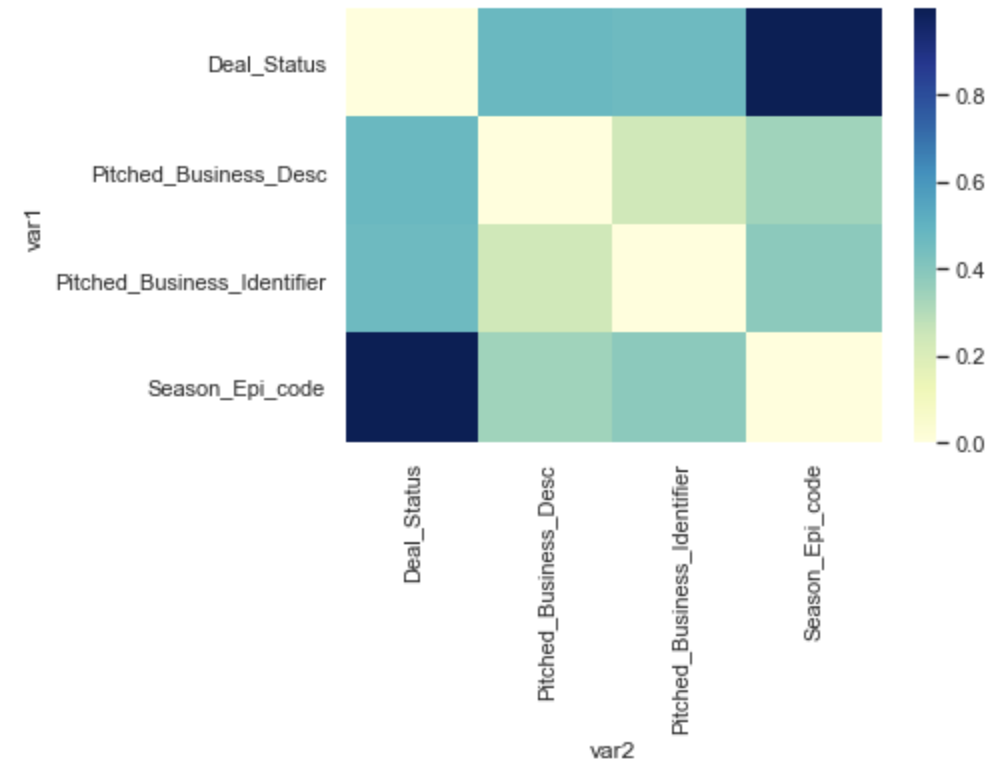
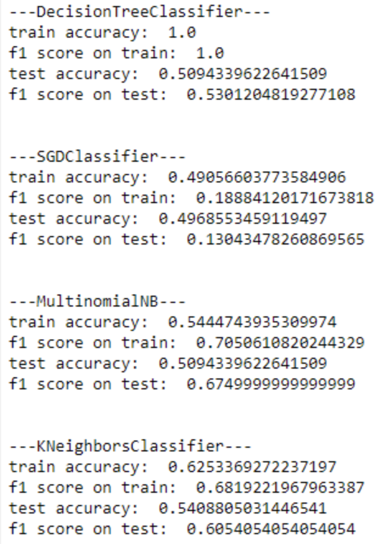

Shark Tank is a famous TV show that allows potential entrepreneurs to introduce their companies/products and get invested by the investors (aka "sharks").
In our DataHacks this year, we are asked to predict whether or not a deal was made between a pitched business and the investors by using the description of the pitched businesses.
To accomplish that goal, we are given two datasets, which allow us to access 530 rows and 5 columns of the train set as well as 176 rows and 3 columns of the test set.
In particular, the columns of the train set are:
Season_Epi_code(data type: int64, categorical-ordinal data) is a code to denote the pair of season and episode when the pitch occured. The datasets consist of 8 seasons of Shark Tank (in the US), and the Season_Epi_code is under the format of SEE. For instance, 115 means 1st season - 15th episode, 803 = 8th season - 3rd episode)
Pitched_Business_Identifier(data type: str, categorical-nominal data) is an abbreviation of the pitched business
Pitched_Business_Desc(data type: str, categorical-nominal data) briefly describes the business and their products
Deal_Status(data type: int64, categorical-ordinal data) is the status of whether the pitched business got a deal or not, with two outcomes: 1 = "YES, the deal was made", 0 = "NO, the deal was not made"
Deal_Shark(data type (except for null values): str, categorical-nominal data) - "Which of the most common sharks agreed on the episode along with the presenters for a deal?" For example, here is a list of deal sharks listed in the corresponding column: BC - Barbara Corcoran, DJ - Daymond John, KOL - Kevin O'Leary, LG - Lori Greiner, MC - Mark Cuban, RH - Robert Herjavec.

Figure 1: Trainset Header
On the other hand, the test set only has 3 columns:
Pitched_Business_Identifier
whose descriptions are shown above

Figure 2: Testset Header
In general, for each pair of season and episode, there are up to 5 pitched businesses.
The most common number of pitched businesses per season-episode is 3; the next common one is 4,
and the least common one is 5.
Only Season 1-Episode 6 had 5 pitched businesses participated at the same time.

Figure 4: Histogram of the Number of Pitched Businesses per Season-Episode
Besides, as our label is the "Deal_Status" column, we should also pay more attention to it.
Specifically, in the trainset, the number of deals made is 283, which is 12.7% greater than the number of no deals.
Such a difference is not drastically large; however, it might lead to the overfitting issue when we build our classification model in the later section.
Thus, we need to handle data with thorough care when splitting the train data into sub-train and sub-test data sets.

Figure 5: Proportion of Deal=YES over Deal=NO
Also, one might wonder if the even or odd episode affects the decision of the investors.
Unfortunately, this factor does not contribute much to our process of classifying deal status.
In fact, the proportions of deals that were/were not made in an even episode are relatively similar to such proportions in an odd episode.
On average, the proportion of "YES" deals is approximately 53%, and the proportioon of "NO" deals is 47%.

Figure 6: The Number of Deal Made and No Deal in an Even or Odd Episode
Now, we take a look at the p-values of the Chi-test that assesses the correlation between every 2 categorical variables.

Figure 7: The P-values of Chi-test when Testing the Correlation between 2 Categorical Vairables
Before we jump into conclusion of this Chi-square test, let's define the null and alternative hypotheses.
H0: There is no correlation between 2 variables.
H1: There is a correlation between 2 variables.
Let's the level of significance be alpha = 0.05. We will reject the null hypothesis if the p-value < 0.05, and conclude that our test favors the alternative hypothesis.
As shown in the above table, all the non-null entries are above 0.05. Hence, we fail to reject the null hypothesis.
We conclude that our traindata did not provide sufficient evidence to favor the alternative hypothesis,
and that also means the data supports H0 which states: "There is no correlation between every two categorical variables".

Figure 8: Heatmap Showing P-values of Chi-test of Correlation
Overall, from the above EDA, we conclude that the Season_Epi_code is not a good predictor for the Deal_Status.
As a result, we are left with "Pitched_Business_Identifier" and "Pitched_Business_Desc" to classify the labels of deals.
Comparing those two attributes, we see that the "Pitched_Business_Identifier" is not descriptive enough,
and we have little to no clue about how we can turn it into a good predictive variable.
Thus, we finally choose "Pitched_Business_Desc" as our input varible of the classification model.
Since we cannot access the testset while training data, we split the trainset into smaller train and test sets (70% train / 30% test).
We'll train our model by using 4 classifiers (Decision Tree, Stochastic Gradient Descent, Multinomial Naive Bayes, and K-Nearest Neighbors).
After that, we compare those models and pick the optimal choice.

Figure 11: Model Comparisons
To summarize:
As shown in the above table, we observe that the Decision Tree Classifier experiences overfitting with 100% train accuracy but only 51% test accuracy.
This is nothing more than a coin flip, so we stop considering this model in future usage.
Additionally, the remaining models seem not to suffer much from overfitting. Their train and test accuracies as well as F1-scores do not vary much from one another.
Compared to SGD and Multinomial Naive Bayes, K-Nearest Neighbor achieves the best train and test accuracies.
Its F1-scores are better than SGD classifier,
and even though the F1-scores of KNN do not beat those of Multinomial Naive Bayes, the differences are not significant.
Overall, we pick KNN Classifer over the other three choices.
Advantages and Disadvantages of KNN:
KNN is relatively simple to implement and easy to understand.
Being an instance-based approach, KNN quickly adapts to new training data, which avoids long training period.
Some drawbacks of KNN are that it does not work well with large dataset, high dimensional or noisy data.
Fortunately,
our datasets are not drastically large (530 observations from the original trainset and around 170 observations from the testset),
and we do not have high dimensional or noisy data. Hence, we can consider using it in the testing process.
After choosing KNN as our classifier, we use the whole given trainset to train the model again and output the results.
(Note: the predictions are stored in a csv file, which has 2 columns ("Pitched_Business_Desc" and "predictions"))
Evaluation Metrics on the Trainset
Train Accuracy: approx. 64%
F1 Score: approx. 0.692
Analysis
The model performs better than a coin flip, and we expect that the final testing result should be around this range of accuracy.
Similarly, the F1-score is close to 0.7, and we expect that the test F1-score does not vary much from this training score.
Result
Please check out the csv file to have more information.